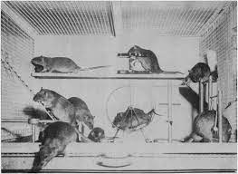

The Biopsychology Review
Review important biopsychological concepts, the anatomy of the brain and the neuron, hormones and neurotransmitters, and key scientists and their advancements in the field of biopsychology!

Biopsychology is an approach to psychology that applies biological principles to psychological phenomena.
Or in simpler terminology, biology + psychology = biopsychology!
In order to understand how the fields of biology and psychology intertwine, it is essential to know the brain and its relevant areas first:
Anatomy of the Brain & Neuron
FRONTAL LOBE: Involved in personality characteristics and movement.
OCCIPITAL LOBE: Involved with vision.
PARIETAL LOBE: Helps in identifying objects and understanding spatial relationships. Involved in interpreting pain and touch.
TEMPORAL LOBE: Involved in short-term memory, speech, musical rhythm, and smell recognition to a small degree.
CEREBELLUM: Coordinates voluntary muscle movements, posture, and balance.
CEREBRAL CORTEX: Also called "grey matter", it is a membrane of tightly-compacted neurons that forms the outer layer of the brain.
CORPUS CALLOSUM: The membrane that connects the right and left hemispheres of the brain.
HYPOTHALAMUS: Contains nerve connections that send messages to the pituitary gland. Handles information from the autonomic nervous system.
MEDULLA: Contains important control centers for the heart and lungs.
MIDBRAIN: Important connection point between the forebrain (frontal region of the brain) and hindbrain (back region of the brain). Relays information between the two.
PONS: Contains many of the control areas for eye and face movements.
SPINAL CORD: A large bundle of nerve fibers that extends from the base of the brain to the lower back. Carries messages to and from the brain and the rest of the body.
THALAMUS: Serves as a kind of relay station for most of the information coming and going to the cerebral cortex. Plays a role in pain sensation, alertness, and the ability to pay attention.
AMYGDALA: Responsible for emotions, emotional behavior, and motivation.
CEREBRUM: Responsible for initiation and coordination of movement, touch, vision, hearing, judgement, reasoning, problem solving, emotions, and learning.
HIPPOCAMPUS: Responsible for explicit memory.

BROCA'S AREA: Associated with speech production and articulation.
WERNICKE'S AREA: Associated wth language comprehension.
It is also important to know the neuron and how it works:
A neuron is the nerve cell of the brain. You can think of it like the building blocks of the nervous system. It has its own anatomy to remember, and it's helpful to imagine the neuron as a tree:
AXON: The "tree roots". Transmits electrical messages.
MYELIN SHEATH: The "bark" of the tree. Protective coating of the axon.
DENDRITES: The "branches". Receive electrical messages from the axon.
SYNAPSE: The space inbetween trees? It's the gap between neurons where messages travel across. Also known as the synaptic gap.
Hormones & Neurotransmitters
Hormones and neurotransmitters are also incredibly relevant when discussing biopsychological concepts.
Hormones and neurotransmitters are both chemical messengers, but hormones are secreted directly into the blood and thus carried to organs and tissues while neurotransmitters transmit a signal from a neuron across the synapse to a target cell. Both are equally important in the body's biological and psychological processes.
Some hormones relevant to biopsychology include ADRENALIN/EPINEPHRINE, which increases blood circulation rate, breathing, and metabolism during stressful conditions, MELATONIN, which is essential in the body's sleep/wake cycle and circadian rhythm, as well as CORTISOL, which regulates metabolism, immune responses, and the body's response to stress.
Some neurotransmitters relevant to biopsychology include SEROTONIN, which affects hunger, sleep, arousal, and mood, DOPAMINE, which affects movement, attention, learning, and the brain's pleasure and reward system, NOREPINEPHRINE, which affects arousal and mood regulation, ACETYLCHOLINE, which enables learning, memory, and muscle contraction, plus many MANY more.

APPLYING: Flight or Fight Response
The body's physiological preparation for fleeing or fighting a sudden threat, known by its nickname Flight or Fight, is an excellent example of a biopsychological response caused by neurotransmitters and hormones.
When a threat is perceived, norepinephrine and adrenalin are released in increased amounts. Blood circulation and the heart rate are thus increased, which both biologically and psychologically preps the body for combat or running.
Drugs & The Brain
Drugs, as we all know, have an enourmous range of potential effects on the brain.
Drugs can be clasified by their effect on the nervous system: STIMULANTS and DEPRESSANTS.
DEPRESSANT DRUGS slow down the nervous system, like alcohol, opiods, etc.
STIMULANT DRUGS excite the nervous system, like cocaine, methamphetamine, etc.
Drugs can also be classified by their effect on body parts: AGONISTS and ANTAGONISTS.
AGONISTS bind the receiving body part and produce a biochemical response, like the contraction of a bicep.
ANTAGONISTS bind the receiving body part but do not produce a biochemical response, like the relaxation of a bicep.
Scientists, Studies, & Theories
Researchers are responsible for everything we know about the relationship between biology and psychology. Scientists who contributed the most meaningful studies and experiments are as follows:
OLDS & MILNER: Psychologists James Olds and Peter Milner at McGill University conducted ground-breaking experimentation with rats. They discovered that rats would repeatedly press levers to receive miniscule electric shocks through electrodes implanted in their brains by the research team.
Why? Because the electrodes were implanted in such a way that dopamine and therefore pleasure was triggered by each shock. Olds & Milner had found the pleasure center of the brain.
MICHAEL GAZZANIGA: Psychologist who led pioneering studies of split brained patients, specifically of how their brains worked after being seperated down the corpus callosum.
He discovered that the two hemispheres of the brain, despite being able to communicate with one another, were still able to function, further supporting Roger Sperry's initial work (see below).
ROGER SPERRY: Neuropsychologist and neurobiologist who won the Nobel Prize for his work with split brain research. He determined that the human brain has specialized functions on the right and left, and that the two sides can operate independently as a result.
BENNET ROSENZWEIG: Conducted a series of 16 experiments concerning environmental effects on brain growth and chemistry. Rats of the same litter were placed in stimulating environments and impoverished environments.
The rats reared in the stimulating environment developed more complex brains than those raised in the impoverished environments.
EUGENE ASERINSKY: Graduate student of the University of Chicago who, in 1953, discovered REM sleep.
He spent hours studying the eyelids of sleeping subjects, where he discovered that rapid eye movement was always present during dreaming. Thus, he founded the Rapid Eye Movement (REM) theory of dreams, where he stated that REM sleep was the period of sleep when dreams occur.
J. ALLEN HOBSON: Psychiatrist and dream researcher who furthered sleep research via his theory of dreams, where he stated that during sleep, activity in some of the lower levels of the brain are interpreted by the thinking and processing areas of the brain, creating dreams.
PHINEAS GAGE: Not a scientist, but rather a patient, who in a railroad incident suffered from a metal pole implanted through his frontal lobe.
This injury caused Gage's personality to change completely, from polite and shy to loud and unpredictable.
Scientists were able to conclude from his case study that certain areas of the brain are responsible for a variety of functions. It was subsequently discovered that the frontal lobe is responsible for personality.
A Neurosurgeon’s Overview the Brain's Anatomy. (2021). Retrieved 22 April 2021, from https://www.aans.org/Patients/Neurosurgical-Conditions-and-Treatments/Anatomy-of-the-Brain
Amygdala - General Considerations. (2021). Retrieved 22 April 2021, from https://nba.uth.tmc.edu/neuroscience/m/s4/chapter06.html
Anatomy of the Brain. (2021). Retrieved 22 April 2021, from https://www.hopkinsmedicine.org/health/conditions-and-diseases/anatomy-of-the-brain
HOCK, R. (2019). FORTY STUDIES THAT CHANGED PSYCHOLOGY. [Place of publication not identified]: PEARSON.
Jawabri, K., & Sharma, S. (2021). Physiology, Cerebral Cortex Functions. Retrieved 22 April 2021, from https://www.ncbi.nlm.nih.gov/books/NBK538496/
Speech & Language. (2021). Retrieved 22 April 2021, from https://memory.ucsf.edu/symptoms/speech-language
Spielman, R., Dumper, K., Jenkins, W., Lacombe, A., Lovett, M., & Perlmutter, M. (2021). Ch. 3 Introduction - Psychology | OpenStax. Retrieved 22 April 2021, from https://openstax.org/books/psychology/pages/3-introduction
The midbrain. (2021). Retrieved 22 April 2021, from https://qbi.uq.edu.au/brain/brain-anatomy/midbrain